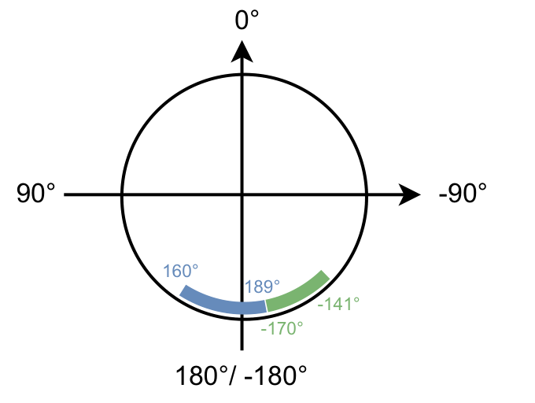
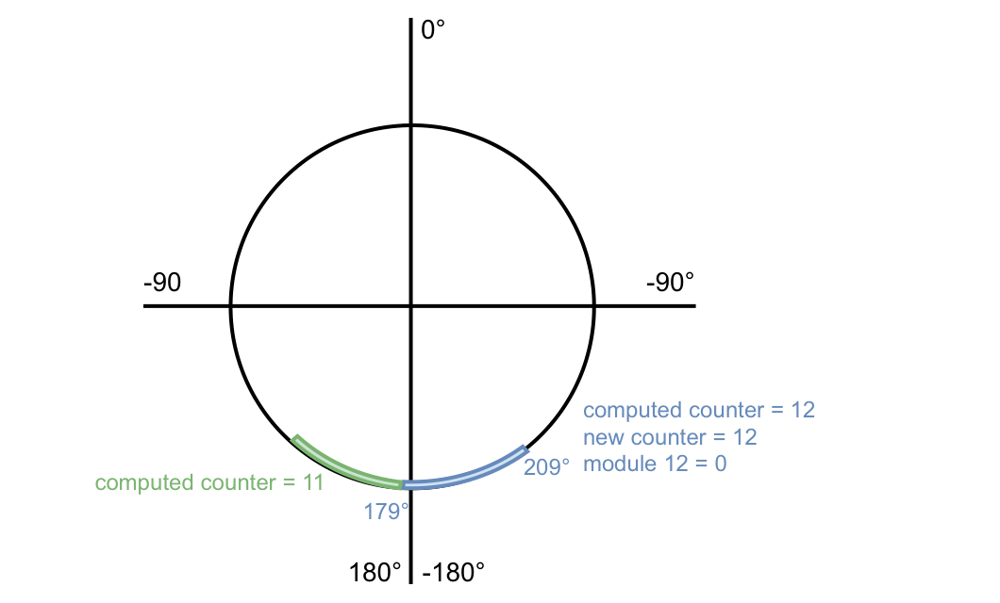
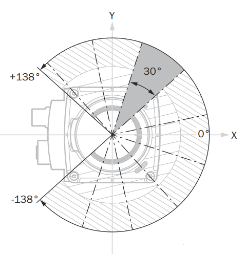
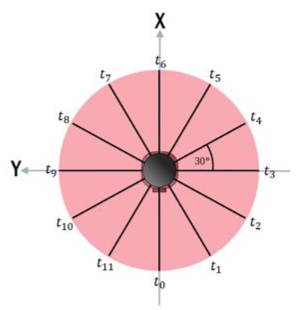
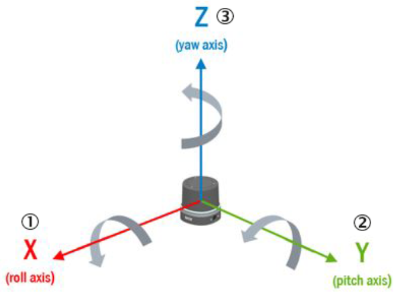

Compact Format¶
The Compact format is SICK's binary format for measurement data. It uses the least bandwidth of all formats and can be parsed very efficiently, for example by copying the bytes into a C struct with memcpy. The fields are not self-describing: your parser must know the layout, which SICK publishes as Kaitai Struct definitions.
The multiScan100 and picoScan100 send each scan segment in a UDP datagram.
The LRS4000 and multiScan200 carry it as a framed telegram in the TCP stream.
Every segment can be processed on its own, which keeps latency low. To work
with a full scan (frame), collect all segments with the same frame_number.
To inspect a captured telegram field by field, paste it into the free, browser-based Kaitai Web IDE together with the definitions below.
The Compact format is organized as one frame definition that dispatches to the individual telegram types. Types 3, 4, 6, and 7 also share the standard header:
flowchart TD
CF[compact_frame.ksy]
T1[type_1_primary_data_spherical_coordinates.ksy]
T2[type_2_imu.ksy]
T3[type_3_ambient_light.ksy]
T4[type_4_encoder.ksy]
T6[type_6_primary_data_multiscan200.ksy]
T7[type_7_imu_standard_header.ksy]
CH[compact_header.ksy]
CF --> T1
CF --> T2
CF --> T3
CF --> T4
CF --> T6
CF --> T7
T6 --> CH
T7 --> CH
T4 --> CH
T3 --> CHThe authoritative Kaitai Struct definitions are in the formats folder on GitHub. Use those files for the complete field layout instead of copying a format definition into this page.
To receive Compact data without writing your own parser, use the C++ sick_perception_sdk. It receives the scan, IMU, and encoder data and provides the scans as point clouds.
Frame Layout¶
All multi-byte values are little-endian. The frame contains a start marker, a
telegram type, the type-specific payload, and a CRC32 checksum. Verify the
checksum before processing the payload. Use the authoritative
compact_frame.ksy definition on GitHub
for the complete frame layout.
Standard Header¶
Telegram types 3, 4, 6, and 7 start their payload with the same header. Types
1 and 2 do not. For the complete field layout, use the authoritative
compact_header.ksy definition on GitHub.
For type 4 with telegram_version 1, payload_length includes sender_id; from version 2 onwards it does not.
Type 1: Scan Data¶
The scan payload is a header followed by one or more modules. Each module carries per-layer metadata plus the beam data for its layers. Read the first module size from the telegram header, then use each module's next_module_size to find the next one; zero marks the last module. Do not assume all modules have the same size.
Read telegram_version, data_content_echos, and data_content_beams before parsing beam data. Versions 3 and 4 have different beam-field ordering; version 4 also adds a distance scaling factor to the module metadata. For version 4, convert a raw distance to millimeters as distance_mm = distance_raw × distance_scaling_factor. All segments of one scan share frame_number and differ by segment index. The authoritative definition is type_1_primary_data_spherical_coordinates.ksy on GitHub.
To convert a beam to a 3D point, use phi (elevation), theta (azimuth), and the distance d:
Measurement Data Conventions¶
Azimuth Angles¶
The theta values within a segment are monotonically
increasing. For a 360° sensor, a segment that crosses the +180°/−180° boundary
can therefore continue beyond 180° instead of wrapping immediately to a
negative value. In the example below, the blue segment runs from 160° to 189°,
while the following green segment uses −170° to −141°. Preserve this ordering
while parsing; normalize the angles only afterwards if your application needs
the range (−180°, 180°].

Azimuth values remain monotonically increasing within a segment.
Segment Counters¶
Normally, the segment counter is between 0 and
number_of_segments - 1 and increases with the azimuth. The multiScan100 has
one exception: when most beams in a segment lie beyond 180°, that segment
belongs to the next frame and receives counter 0. With 30° segments, an
angle-only calculation would produce counter 12, which wraps to 0. Use the
transmitted counter rather than deriving it from theta.

The blue segment belongs mainly to the next frame and therefore receives counter 0.
RSSI Values¶
Compact and MSGPACK represent RSSI as a dimensionless 16-bit
unsigned integer. Treat the full range from 0 to 65535 as valid, although a
device may never reach the maximum. RSSI is not standardized, so absolute
values are not directly comparable between device families.
Some device outputs scale an internally measured 8-bit RSSI value depending on the output format:
RSSI Values: format, bit depth, and conversion.
| Format | Bit depth | Conversion |
|---|---|---|
| Compact type 1 | 16-bit | 16bit = (8bit / 255) × 65535 |
| MSGPACK | 16-bit | 16bit = (8bit / 255) × 65535 |
LMDscandata (CoLa) |
8-bit | none; value 254 = reflector detected |
In 16-bit output, the low byte equals the high byte (for example 0xe6e6). This is expected.
Bit fields and beam properties. data_content_echos,
data_content_beams, and each beam's properties value are bit fields. Test
bit i with (value & (1 << i)) != 0; do not interpret the complete decimal
value as a single state. In properties, bit 0 means that a reflector was
detected for at least one echo of the beam. This can be treated as applying to
the last echo because a reflector echo is not physically followed by another
echo on the same beam. Bits 1 through 7 are reserved and must be ignored.
Segments (picoScan100)¶
The picoScan100 scans a range of 276°. One 276° rotation of the scan layer is one scan (frame). For output, each scan is split into segments of a fixed angular size:
Segments (picoScan100): scanning frequency, segment size, and segments at 276°.
| Scanning frequency | Segment size | Segments at 276° |
|---|---|---|
| ≤ 25 Hz | 30° | 10 |
| ≥ 30 Hz | 60° | 5 |

Example of 30° scan segments within the 276° scan range.
Segment boundaries do not move when you reduce the scan range. Measured values in hidden angle ranges are filled with zeros, and a segment that is completely hidden is not sent. Example: 180° (−90° to +90°) at 40 Hz gives 4 segments.
Segments (multiScan100)¶
The multiScan100 captures a 360° frame across its scan layers and divides the output into time-based segments. Each segment contains data from all scan layers, but the azimuth ranges of those layers do not necessarily line up spatially. Raw output keeps the original layer timing. Rectified output aligns the layer start angles as closely as possible and adds at least one segment interval of latency. See the multiScan100 overview for device-specific output context.

A 360° frame split into twelve 30° segments, each with its own time stamp.
Each segment covers a different time within the rotation, so t0 to t11
increase in the scan direction. Use the per-segment time stamps rather than the
frame time when you fuse the data with motion or another sensor.
Type 2: IMU¶
A flat, fixed-size payload from the integrated inertial measurement unit. It
has no standard Compact header and no optional fields. IMU output is available
on multiScan100 and picoScan100; sampling and available fields depend on the
product. The LRS4000 provides IMU data through CoLa events or
GET /api/InertialMeasurementUnit, not as a Compact telegram. The authoritative Compact layout is
type_2_imu.ksy on GitHub.
The data is specified in the following coordinate system based on the DIN 70000 system: The x-axis lies on the 90° beam of the 0° plane. The y-axis is perpendicular to the x-axis and lies in the 0° plane. The y-values increase in the counter rotation direction (right-handed system). The z-axis is perpendicular to the y-axis and the top of the device points towards increasing z-values.

IMU coordinate system based on DIN 70000.
Type 3: Ambient Light¶
The ambient-light image of the multiScan200 is sent as a separate telegram. The sensor captures it passively through the same receiver as the distance data. It follows the standard header. Use the authoritative definition linked below for its payload layout.
Distance and ambient-light data measured at the same time share the same
frame_number. Use the authoritative
type_3_ambient_light.ksy definition on GitHub
for the complete payload layout.
Type 4: Encoder¶
Reports an external rotary encoder attached to a moving axis (picoScan150).
One encoder telegram is sent per scan frame and linked to it by frame_number.
It follows the standard header. Use the authoritative
definition linked below for its payload layout.
See 3D With 2D LiDARs for how to fuse encoder and scan data.
Use the authoritative type_4_encoder.ksy definition on GitHub for the complete payload layout.
Type 6: Scan Data (multiScan200)¶
The scan data of the multiScan200. One telegram carries one segment: a block of columns (slots), each with all layers. It follows the standard header. Use the authoritative definition linked below for the complete segment header and data-block layout.
Convert each pixel to a 3D point with the formula for type 1, using the elevation angle of its layer as phi and the azimuth angle of its column as theta. Use the authoritative type_6_primary_data_multiscan200.ksy definition on GitHub for the complete segment header and data-block layout.
For interlaced scan configurations, number_of_interlace_steps is greater than 1 and consecutive frames must be combined to cover the full field of view; current_interlace_index identifies each frame's position in that sequence. Configured data reduction can also leave zero-filled distance and RSSI values in the fixed-size Compact segment, including for angles outside the selected range. A zero value alone therefore does not mean that the beam or column is absent.
Type 7: IMU with Standard Header¶
The IMU data of the multiScan200. The content matches type 2, but the payload starts with the standard header and has no telegram_version field of its own:
Use the authoritative type_7_imu_standard_header.ksy definition on GitHub for the complete payload layout.
Transport¶
Transport: transport, formats and devices, connection, delivery guarantee, and best for.
| Transport | Formats and devices | Connection | Delivery guarantee | Best for |
|---|---|---|---|---|
| UDP unicast | Compact, MSGPACK (multiScan100); Compact, MSGPACK (picoScan100) | Sensor sends to one host | None; packets can be lost or reordered | Low-latency data to one host |
| UDP multicast | Compact (multiScan100); Compact, MSGPACK (picoScan100) | Sensor sends one stream to a group | None; packets can be lost or reordered | The same data to several hosts |
| TCP | Compact (LRS4000 and multiScan200); LMDscandata where supported | Client connects to a device-specific data port or CoLa port | Ordered and error-checked | Data integrity over latency; PLCs |
For UDP, select the required format in the data-output settings and set the
destination IP address and port. For multiScan100 and picoScan100, the REST
API exposes Ethernet destination settings for the scan data stream. The
picoScan100 factory default is 192.168.0.100:2115.
The multiScan200 sends Compact data over TCP to avoid data loss, on separate ports per content:
Transport: TCP port, content, and telegram type.
| TCP port | Content | Telegram type |
|---|---|---|
2115 |
Distance and RSSI, optionally with ambient light | 6 |
2116 |
Ambient light only | 3 |
2117 |
IMU | 7 |
Select TCP Compact as data output mode (sWN dataOutputMode 1); see the multiScan200 CoLa Telegram Listing.
The LRS4000 ScanDataFormat REST parameter supports Compact output. The
Compact stream uses TCP, with port 2115 as the Compact data port.
For multicast, set the destination to a multicast address in the range 224.0.0.0 to 239.255.255.255. Every receiving host joins the same group and listens on the configured UDP port. The sensor sends each packet only once, however many hosts receive it. Make sure that switches and routers forward multicast traffic, and use IGMP snooping when several receivers are connected.
Wireshark Dissector¶
SICK provides a Wireshark dissector for Compact measurement and IMU data, so you can inspect the stream field by field instead of reading raw bytes. It supports the Compact format only. Use it to confirm framing, ports, CRCs, and decoded values before you debug your own parser.
Install the Dissector¶
- Download and install Wireshark.
- Download the dissector: COMPACT_Dissector.lua.
- In Wireshark, open Help > About Wireshark > Folders and copy the file to the Personal Lua Plugins folder.
- Restart Wireshark.
Decode Compact Data¶
Configure the sensor to output Compact format, then capture on the Ethernet
interface connected to the sensor. Enter compact as the display filter. The
Protocol column shows COMPACT; select a packet to inspect the decoded
structure and values such as distance.
On Windows, set the Ethernet network profile to Private so that the firewall does not block the stream:
Replace 18 with the interface index reported by Get-NetConnectionProfile.
To disable the plug-in temporarily, choose Analyze > Enabled Protocols and clear its checkbox. See Frame Layout for the telegram structure and Wireshark | pcap for recording traffic.
Related Articles¶
How to receive IMU data and dissect it with Wireshark.